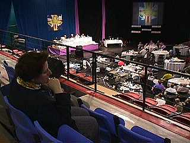

Reflections
Synod Through the Eyes of a "Pro" Synod Watcher
A theologian and ordinand from the Diocese of Central Newfoundland, Leslie Lorenson is a freelance writer for the Anglican Communion covering many Synod sessions of the Church of England and ECUSA for the international religious presses.

Leslie Lorensen watches the Canadian General Synod
"Of the Anglican Communion provinces set along the Great Circle in the North Atlantic-- the British Isle churches, notably the Church of England, ECUSA and the Anglican Church of Canada-- it is the Canadian province that is pushing back the boundaries for living Christ's gospel of justice and peace.
Reflecting the rich tapestry of Montreal's cultural mosaic, throughout the course of the meeting the mind of Synod consistently focuses on viable justice within its multifaceted communities within the province-- from the First Nations to the Maritimes-- and in the wider global community especially with the provincial partners in Brazil.
Seeking unity in diversity particular to Anglicanism, the heart of the discussion celebrates a multicultural vision that must serve as a model for the rest of the Anglican Communion and in building ecumenical relationships the wider faith community.
Observing the synodical procedure on the floor of synod, it is not surprising that Canada offers a balanced view of synodical government. While the C of E "Bishop in Synod" model maintains top-down decision making power structure and ECUSA General Convention, while inverting this decision making model, separates the houses-- deputies in one room, bishops in another-- the fellowship in the Canadian synod is evidenced by common diocesan tables where laity, clergy and bishops consult and sit together as one body. Such a partnership model fosters healthy dialogue and, in keeping with the meeting's theme "Lift Every Voice", ensures every voice the opportunity to be heard and heeded. Indeed, this is a loving model of pioneering church governance that other provinces in the post-Imperial Anglican Communion would do well to emulate.
Truly, as Michael Peers, Primate of Canada stated in his mid-week sermon, the Canadian province of the world-wide Anglican Communion is inspired and working in the Holy Spirit."